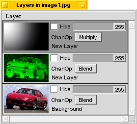

Note that this is an old tutorial, and the same effect can be achieved much easier now in Becasso 1.5 using the DuoTone add-on and a graded selection map. The tutorial is retained here for reference, and because it explains about pixel intensities and the "multiply" channel operation.
Step 1
 Let's open a colorful image in Becasso. The sports car used in
this example is mainly red. Simply replacing the saturation
channel of the image with a gradient would throw away any saturation
information already there, so we will first save this information by
choosing Edit > Channel to Selection > Saturation. This
copies the saturation channel into the selection map.
Let's open a colorful image in Becasso. The sports car used in
this example is mainly red. Simply replacing the saturation
channel of the image with a gradient would throw away any saturation
information already there, so we will first save this information by
choosing Edit > Channel to Selection > Saturation. This
copies the saturation channel into the selection map.
Step 2
 Now, we add a second layer to the image. We want to 'extract' the
selected saturation information into a channel of the newly created layer.
Let's take the green channel as this is nice and contrasty. Selecting
Edit > Selection to Channel > Green yields no visible
result however, since the alpha channel of the new layer is still zero
everywhere (i.e. the image is there, only completely transparent).
To visualize what we are doing, do an Edit > Select All
(
Now, we add a second layer to the image. We want to 'extract' the
selected saturation information into a channel of the newly created layer.
Let's take the green channel as this is nice and contrasty. Selecting
Edit > Selection to Channel > Green yields no visible
result however, since the alpha channel of the new layer is still zero
everywhere (i.e. the image is there, only completely transparent).
To visualize what we are doing, do an Edit > Select All
(Alt-A) and an Edit > Selection to Channel >
Alpha to make the layer fully opaque. There's our saturation
channel!
Step 3
 Now, we add a third layer containing our actual gradient, using the Gradient Generator add-on. In this case, 'white' will correspond to maximum color later, and 'black' to 'black-and-white'.We will now have to 'combine' the gradient and the original saturation information. This is simply done by setting the gradient layer channel operation to 'Multiply', and merging the top two layers. This works because multiplying with black yields zero, and multiplying with white yields the original information.
This results in a combined gradient ranging from the full original
saturation information in the top left, to no saturation outwards.
Step 4
We will now copy this combined saturation information over the old saturation channel of the original image. To do this, we use Edit > Channel to Selection > Green. The selection map will then contain a simple copy of the saturation information in the layer we used as a 'scratch pad' for our multiplication.
Now we select the layer containing the original image. Selecting Edit
> Selection to Channel > Saturation replaces the original
saturation information with our new gradiented version, yielding the
desired result.